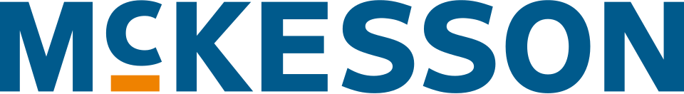

맥케슨 McKesson Corporation
맥케슨(McKesson Corporation)은 의약품을 유통하고 의료 정보기술, 의료용품, 건강 관리 도구를 제공하는 미국의 공개회사이다.
최종 업데이트

맥케슨은 어떤 브랜드인가
이 회사는 북미에서 사용되거나 소비되는 전체 의약품의 3분의 1을 공급한다. 의료 산업을 위한 광범위한 기반 시설을 운영하며 바코드 유통 스캔, 약국 로봇, RFID 태그를 일찍 도입했다.
2024년 매출은 $308.9 billion이며, 매출 기준 미국 9위 기업이자 미국 최대 의료 기업이다. 코로나19 대유행 기간에는 미국 정부의 중앙 유통사로서 수억 회분의 백신과 10억 회분이 넘는 접종을 위한 부속 물품 키트를 공급했다.
한편 미국의 오피오이드 유행으로 이익을 얻었다는 내용의 연방 소송에 피고로 지목된 기업이다.
맥케슨은 어떻게 시작되고 성장했나
Charles M. Olcott가 1828년 뉴욕에서 Charles M.
Olcott라는 이름으로 사업을 시작했으며, 회사의 설립 연도는 1833년이다. 사업은 식물성 약품의 수입과 도매로 출발했고 John McKesson이 1833년 합류하면서 Olcott, McKesson & Co.로 이름을 바꿨다.
Daniel Robbins가 성장 과정에서 세 번째 동업자로 참여했으며, 1853년 Olcott 사망 뒤 McKesson & Robbins로 개칭했다. 1967년 Foremost Dairies가 적대적 인수로 McKesson & Robbins를 인수해 Foremost-McKesson Inc.를 만들었다.
1982년 유제품 사업을 매각하고 McKesson Corporation으로 이름을 변경했다.
맥케슨의 브랜드 아이덴티티는 무엇인가
북미 의약품의 3분의 1을 공급하는 유통망과 의료 정보기술을 결합해 의료 산업의 기반 시설을 제공하는 점이 특징이다.
맥케슨의 대표 제품과 서비스는 무엇인가
핵심 사업은 북미 의료 시장에 의약품을 유통하는 일이며, 의료용품과 건강 관리 도구도 공급한다. 의료 정보기술 사업에서는 의료기관의 운영을 지원하는 시스템과 기술을 제공한다.
유통 기반 시설에는 바코드 스캔, 약국 로봇, RFID 태그 같은 기술을 적용한다. 2006년 Per Se Technologies와 RelayHealth, NDCHealth Corporation을 인수하고 2007년 Practice Partner를 인수해 의료기술 사업을 확대했다.
2010년에는 US Oncology, Inc.를 $2.16 billion에 인수해 McKesson Specialty Health 사업에 통합했다.
맥케슨은 지금 어떤 상태인가
회사는 어빙에 본사를 두고 80,000명이 넘는 직원을 고용하며, 2024년 매출은 $308.9 billion이다. 뉴욕증권거래소에서 종목 기호 MCK로 거래되는 공개회사이자 S&P 500 구성 종목이다.
북미 의약품의 3분의 1을 공급하며 매출 기준 미국 9위 기업이자 미국 최대 의료 기업의 위치를 차지한다.
맥케슨 로고는 어떻게 변해왔나
자주 묻는 질문
맥케슨는 어느 나라 브랜드인가요?
맥케슨는 미국의 헬스·제약 브랜드입니다.
맥케슨는 언제 설립되었나요?
맥케슨는 1833년 설립되었습니다.
맥케슨의 브랜드 아이덴티티는 무엇인가요?
북미 의약품의 3분의 1을 공급하는 유통망과 의료 정보기술을 결합해 의료 산업의 기반 시설을 제공하는 점이 특징이다.
맥케슨의 대표 제품은 무엇인가요?
핵심 사업은 북미 의료 시장에 의약품을 유통하는 일이며, 의료용품과 건강 관리 도구도 공급한다.
맥케슨는 현재 어떤 상태인가요?
회사는 어빙에 본사를 두고 80,000명이 넘는 직원을 고용하며, 2024년 매출은 $308.9 billion이다.
맥케슨의 본사는 어디에 있나요?
맥케슨의 본사는 어빙에 있습니다(위키데이터 기준).
맥케슨의 공식 웹사이트는 어디인가요?
맥케슨의 공식 웹사이트는 http://www.mckesson.com/ 입니다.
출처와 검증
맥케슨 관련 참고: 공식 웹사이트 · 위키데이터 Q570473 · 한국어 위키백과 · 영어 위키백과. 브랜드명은 한글과 원어를 함께 표기하되 데이터에 없는 표기는 만들지 않습니다. 기원 국가·설립연도는 검수된 정의문에서 확인된 값을 우선하고, 없을 때만 공식 웹사이트 URL이 일치하는 위키데이터 개체의 값을 씁니다. 위키데이터 값은 2026-09-12 기준입니다.